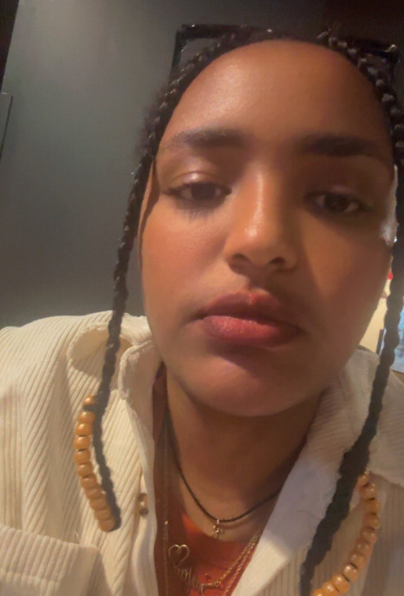

Front End Developer
Web Designer
About
- This 5-page website is a personal portfolio that highlights my journey as a digital media and web technology student.
- It showcases my goals, coursework, skills, and professional development as I work toward building a career in the field.
- Each section reflects both my academic progress and my growth outside the classroom, as well as a page that's more personal.
Resume
- This section includes my resume, highlighting my education, skills, and relevant experience.
- It provides a clear overview of my qualifications and what I bring to potential opportunities.
Goals
- This section outlines my short-term and long-term goals as I work toward a career in digital media and web technology.
- It also highlights my academic plans, internship goals, and future career ambitions.
Courses
- Here you’ll find the courses I’ve completed and am currently taking as part of my degree program.
- It showcases the skills and knowledge I’ve gained in web development, design, and digital media. This page also reflects my academic progress.
Off the Clock
- This section gives a glimpse into who I am outside of school and work.
- It includes hobbies, personal interests, or creative projects I enjoy in my free time. It helps show a more personal side of me beyond academics.